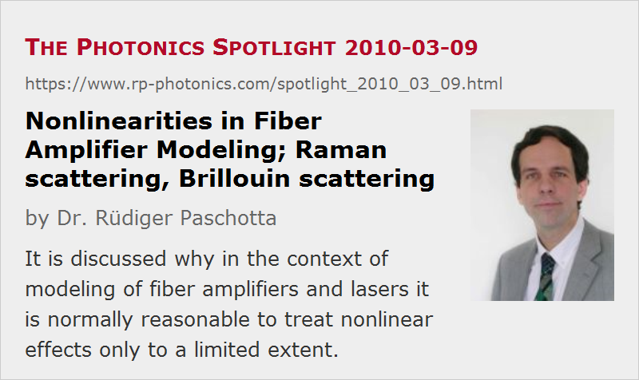

Nonlinearities in Fiber Amplifier Modeling
Posted on 2010-03-09 as a part of the Photonics Spotlight (available as e-mail newsletter!)
Permanent link: https://www.rp-photonics.com/spotlight_2010_03_09.html
Author: Dr. Rüdiger Paschotta, RP Photonics Consulting GmbH
Abstract: It is discussed why in the context of modeling of fiber amplifiers and lasers it is normally reasonable to treat nonlinear effects only to a limited extent.
Ref.: The Photonics Spotlight 2010-03-03; encyclopedia articles on nonlinearities, Brillouin scattering, Raman scattering, fiber amplifiers, laser modeling

I am often asked whether my fiber amplifier and laser modeling software RP Fiber Power can be used for modeling nonlinear effects. Strictly speaking, it can't, as it is not able to calculate the generation of power at new wavelengths through nonlinear effects, including the back-action (depletion) on the original wavelength components. What it can do, however, is to calculate the expected Raman and Brillouin gain. If the nonlinear gain is below the corresponding threshold value, you know that power extraction by these effects is negligible. If not, you know that the calculated powers are actually not realistic, because in reality the nonlinear effects would change the results.
In practice, it is very often fully sufficient to find out whether or not nonlinear effects become important. You do not need to know exactly what would happen in the strongly nonlinear regime, simply because you want to avoid operation in this regime anyway!
One might think that it would be not that difficult to fully take into account nonlinear effects in such a numerical model. After all, the corresponding equations are not necessarily very complicated. This reasoning is not valid, however – for several reasons:
- One would have to take into account the exact optical spectra of all involved waves, and these are often not known.
For example, try to find out what the exact optical spectrum from a multimode seed laser diode is. The specs may indicate some bandwidth value of a few nanometers, but your chances to get anything like that in more precise form (exact spectral shape) or even guaranteed are very small, for understandable reasons. Such laser diodes may jump between different modes, strongly depending on the operation conditions (current, changes of current, any optical feedback, etc.) and minor details of the device. Nobody can know exactly what such a thing will feed into your amplifier. Therefore, it obviously makes little sense to try exact modeling such effects. - Even if you have stable and exactly known spectra, you might have to numerically resolve many different wavelength channels, driving up the required computation time enormously. Although this is not a fundamental problem, it is a significant practical one.
- Different fiber nonlinearities often come together. For example, stimulated Raman scattering can be accompanied by strong four-wave mixing processes, depending on details of the chromatic dispersion, which the user then obviously also would have to provide to the software.
- Nonlinear effects often cause strong instabilities. This is particularly the case for Brillouin scattering: if significant back-scattering begins, this quickly depletes the forward signal wave, strongly reducing the Brillouin gain again. The nature of the resulting strong fluctuations depends on many tiny details (including Rayleigh scattering in the fiber) which nobody can tell you. Even if you knew them and the model could include them all, one would often have to simulate the temporal evolution and statistically process it.
Therefore, in many cases of interest such nonlinear modeling would be extremely difficult, and often at the same time not particularly useful. If anyone claims that his fiber amplifier software can do such things, you should be quite cautions.
Of course, there are cases where the modeling of strong nonlinear conversion processes makes sense. For example, fiber Raman lasers can be modeled with reasonable accuracy, even though it may be difficult to reliable predict the resulting optical spectrum. In the area of fiber amplifiers and lasers, I think it would not make much sense to include nonlinear conversion, and therefore such extensions are not planned for the RP Fiber Power software.
This article is a posting of the Photonics Spotlight, authored by Dr. Rüdiger Paschotta. You may link to this page and cite it, because its location is permanent. See also the RP Photonics Encyclopedia.
Note that you can also receive the articles in the form of a newsletter or with an RSS feed.
Questions and Comments from Users
Here you can submit questions and comments. As far as they get accepted by the author, they will appear above this paragraph together with the author’s answer. The author will decide on acceptance based on certain criteria. Essentially, the issue must be of sufficiently broad interest.
Please do not enter personal data here; we would otherwise delete it soon. (See also our privacy declaration.) If you wish to receive personal feedback or consultancy from the author, please contact him e.g. via e-mail.
By submitting the information, you give your consent to the potential publication of your inputs on our website according to our rules. (If you later retract your consent, we will delete those inputs.) As your inputs are first reviewed by the author, they may be published with some delay.
|  |
If you like this page, please share the link with your friends and colleagues, e.g. via social media:
These sharing buttons are implemented in a privacy-friendly way!